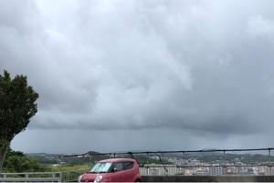
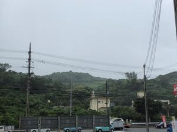
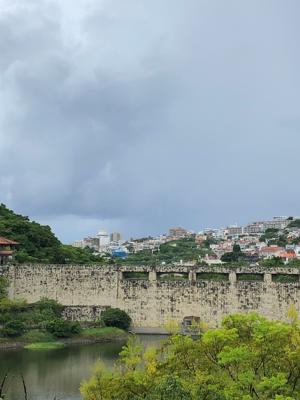
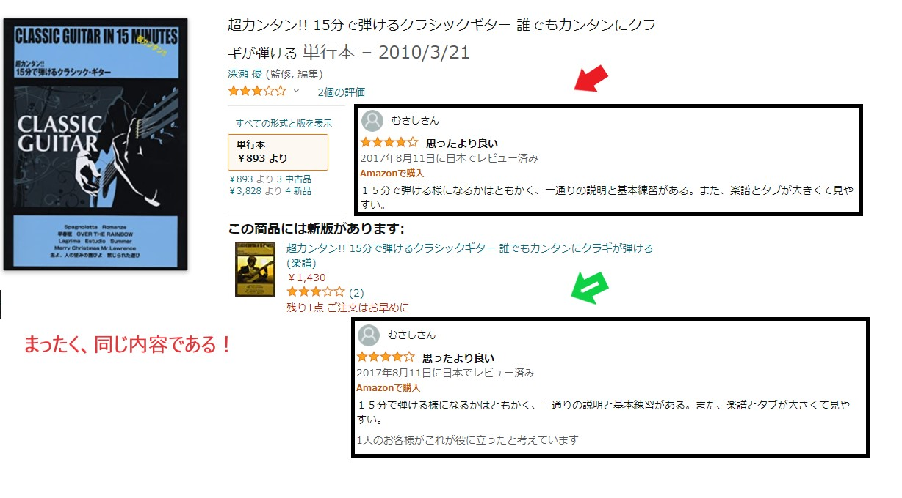

うるがいの話 ある日
最新:
うるがいとは 前提知識です
カニの画像をクリックすると『うるがいの話』サイトを表示します

|
うるがい(ｳﾙｶﾞｲ urugai)とは、『もずくがに』の名前でとても大きくなります。
|

|
たながー（ﾀﾅｶﾞｰtanagaa）とは手長えびのことで、何種類かあり大きいのは車
エビぐらいになります。
|

|
ぶながー(bunagaa)とは、赤い髪の毛、赤い身体、そして身長は１ｍ２０ｃｍ
ぐらい、川の蟹を食べているの目撃された。場所は沖縄県国頭郡大宜味村のと
ある村僕の隣近所に住んでいる爺さんから、聞いた話です。
|
2021年09月12日 (日）
15:24



おとといから、新しくアマゾンから購入したい専門書を使ってみた。子供がイ
ラストの作成ツールである『Adobe Illustrator』の本がないのと尋ねられたの
がきっかけで、同じ機能を持つ無料ソフト『Inkscape』の本をアマゾンから買
った『できるクリエイター Inkscape 独習ナビ Windows&Mac対応 単行本
（ソフトカバー）発売日 2016/9/26』。
ところが本の始めのところで、本に書いている操作がでけん！、何コレ！、悪
書いやいや、購入前のアマゾンの評価は良かったぜ！。で、インストールした
最新のソフトのバージョンと、本（２０１６年９月）が利用としている時点で
のバージョンとの違いか、と本のバージョンに近い古い時点をインストールす
る。その筋のエンジニアと少しは自負しているが・・・・、本が悪いと疑う。
放り投げるのもしゃくなので２日間悩む。バージョンではなかった、分かった
、本の書き方が悪い！。こんな説明で分かるかとあの良い評価はと、もう一度
、アマゾンの評価を全部みた。
5つ星のうち2.0 分かりづらい ← これと同感
2019年7月24日に日本でレビュー済み
Amazonで購入
イラストレーター使えますが、この本だけでは、チンプンカンプンです
5つ星のうち4.0 バージョン0.91対応 ← 玄人さんだな、これは
2021年6月12日に日本でレビュー済み
Amazonで購入
仕事上でillustratorに準ずるソフトウエアが必要となったため、無料である
Incscapeの最新版をインストールしましたが、やはり何も手引きが無いと先に
進めないので本書を購入しました。
さっそく指示通りに作画してみたものの、どうにも応答しない箇所があり悩ん
でしまいました。
本書には「最新バージョン0.91対応」とありますが、2021年5月時点での最新
版はVer.1.1「もしかして…」と思い、いったん削除したうえでVer.0.91を
インストールしなおしてから、同手順で作画を試みたところ上手く作成できま
した。
私が何らかの手順を間違っていた可能性もありますが、これから本書で
Incscapeを学ぼうと考えている方は、最新版ではなく本書に対応しているバー
ジョン0.91をダウンロードすることをお薦めします。
ちなみに、他の方からの指摘もあるように、掲載されているテキストやキャプ
チャ画面の文字が小さくて非常に読みづらいです。
本書とディスプレイを交互に見る必要がある解説書としては、少し残念ですね。
図書館から借りてあるギターの本『超カンタン!! 15分で弾けるクラシックギ
ター 誰でもカンタンにクラギが弾ける (楽譜) 楽譜 発売日 2015/11/20』
これって嘘つき！と思った。１５分で分かる訳ないだろう（誇大過ぎる）、で
はアマゾンの評価をみてみるとなんと旧新版で同じ評価の書き込みがあった。
桜か、ちなみ購入しないと評価できないのでこの書き込みした人は二つ買った
のか？、本の後半に載っているいくつかの楽譜が違うだけなのに、え！である

なお、最初の専門書を子供に見せると字が小さい、ガッチ系なので使わない！
と言われた。そうだよな。でもこの本、売れていると思う、手元のは第７版。
今朝、にわか雨が降ったが今のところ雨は降りそうにない、しめしめ。